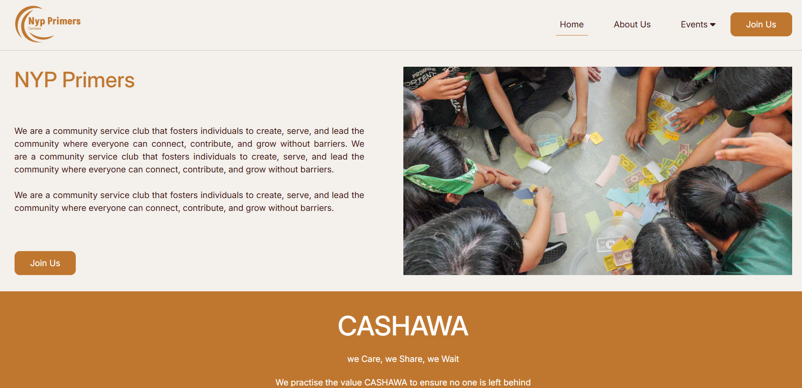
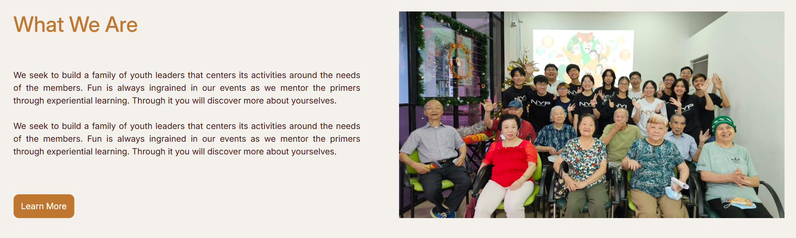
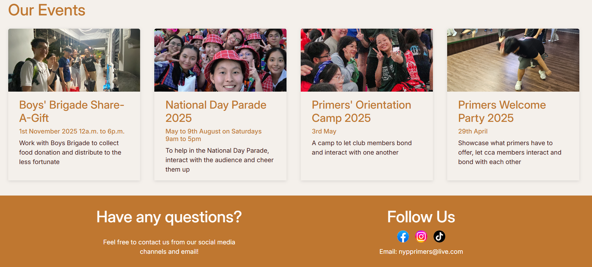
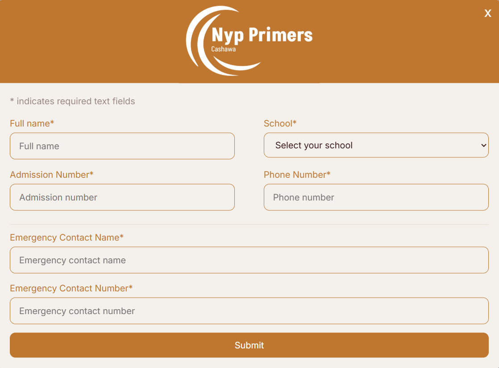
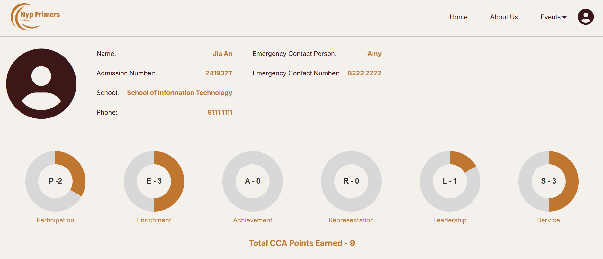
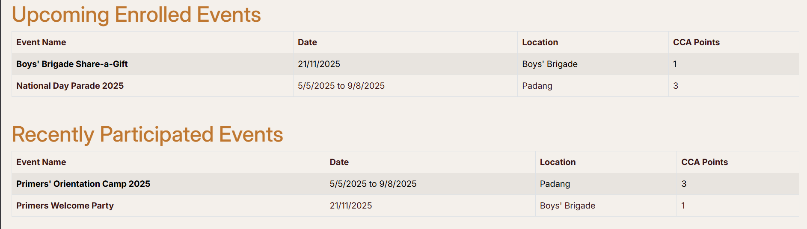

Project description
This project is a public website for NYP Primers, a school CCA club.
The target users of this website are new NYP students who want to know more about NYP Primers
and the members (to enroll/ withdraw from events).
The purpose of this website is to showcase what NYP is and to facilitate club activities.
The color theme used in this website is the sunset color, which reflects the warmth of the NYP Primers.
This project includes a login form and a total of four pages: home page, about us page, events page, and account details page.
This is just a front-end website, and everything here is hard-coded.
Home Page
The home page is designed to give an overview of what NYP Primers is and a little sneak peek into other pages.

This is the landing page of the website, and this section of the home page is to give the users a brief explanation of what NYP Primers is.
Two call-to-action buttons "Join Us" can be found, prompting the user to join NYP Primers club.

Scrolling down, users will see this 'What We Are' section, which is a sneak peek of the 'About Us' page.
Clicking the 'Learn More' button will lead the user to the 'About Us' page.

Scrolling further down, users will be greeted with this 'Events' section, a sneak peek of the 'Events' page.
Clicking on the event cards will lead the user to their respective sections at the 'Events' page.
Then, the footer can be seen marking the end of the 'Home' page.
About Us Page
Sign up form, which can be called by pressing 'Join Us' button and the user account page are included in this section.
Events Page
Sign up form, which can be called by pressing 'Join Us' button and the user account page are included in this section.
Account Details Page
Sign up form, which can be called by pressing 'Join Us' button and the user account page are included in this section.

This is the sign up form, for those who want to join NYP Primers club.
This is not a typical sign up form that helps users create an account.
Instead, submitting this form will send an application form to NYP Primers, and the user will become a member if approved.

This is the account details page, where members of the club can see their details and the CCA points they have earned.
The CCA point system is designed in accordance with NYP CCA point system (PEARLS).

This is the account details page, where members of the club can see their details and the CCA points they have earned.
The CCA point system is designed in accordance with NYP CCA point system (PEARLS).
Technologies used: HTML, CSS, JavaScript, Bootstrap